Bridging the economic gap
Unemployment on reservations can be staggeringly high due to geographic isolation. Our AI data center skips the industrial age and leaps into the digital future, bringing high-paying tech jobs directly to our doorstep.
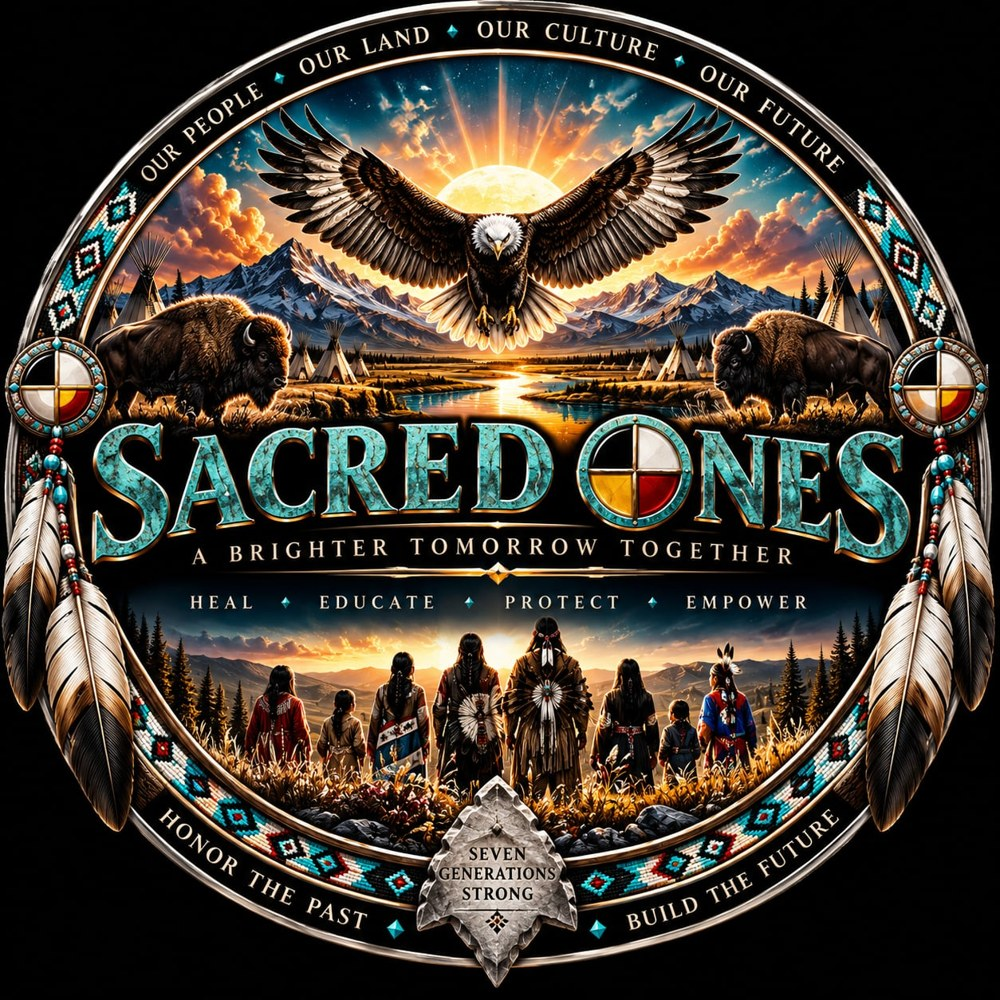
Oceti Sakowin · Fort Peck ReservationA nonprofit building youth technology jobs, a healing ancestral park, and the return of the buffalo. Heal. Educate. Protect. Empower.
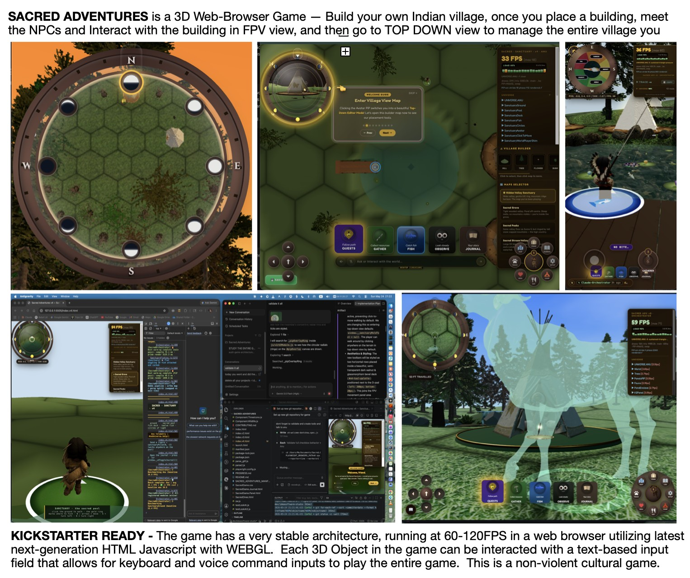
Everything Sacred Ones is building lives on this page: our mission, the projects, the Oceti Sakowin archive, and the store. Keep scrolling, or jump straight in.
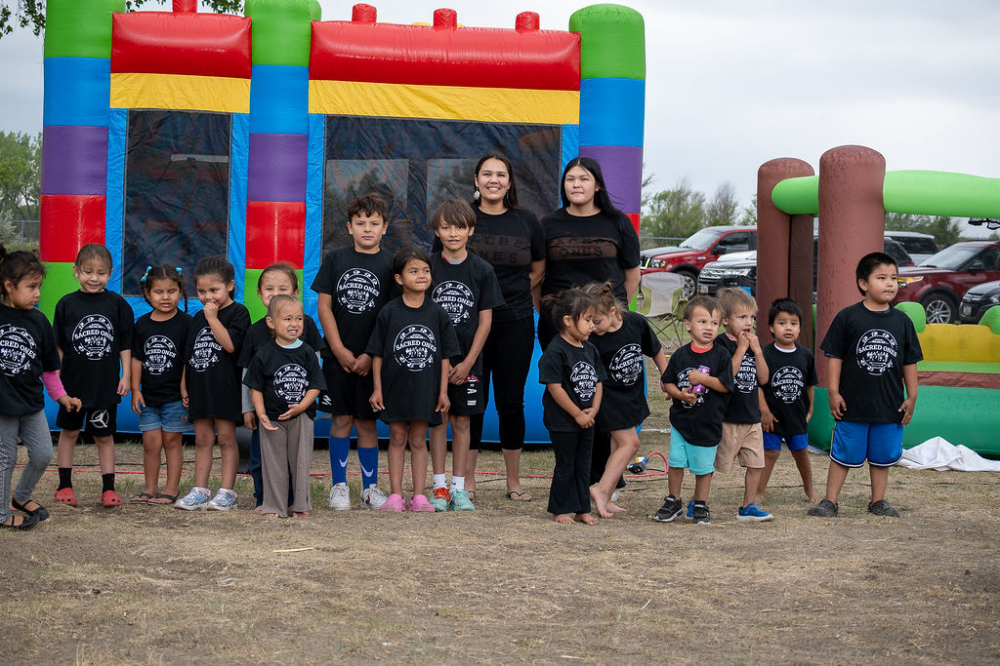
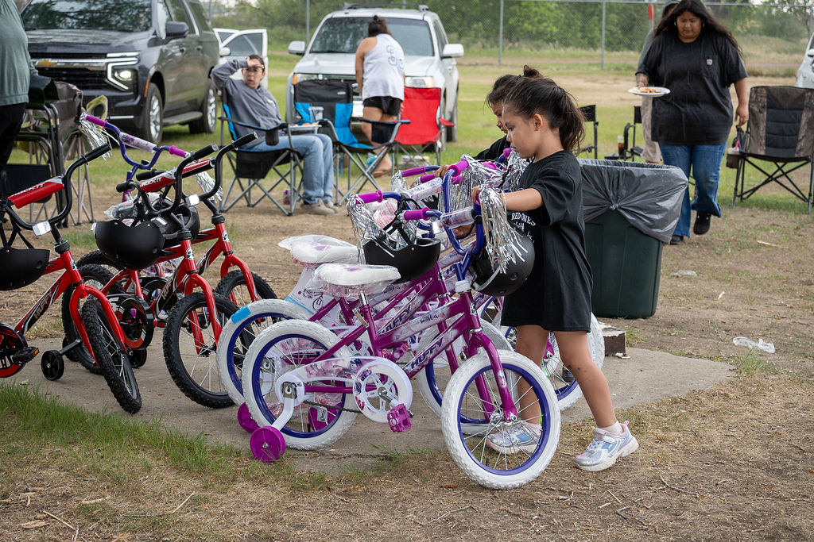
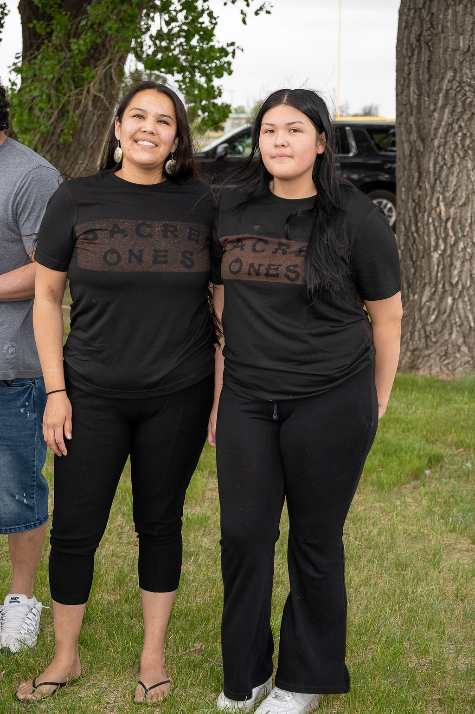
Community day, May 30See the photos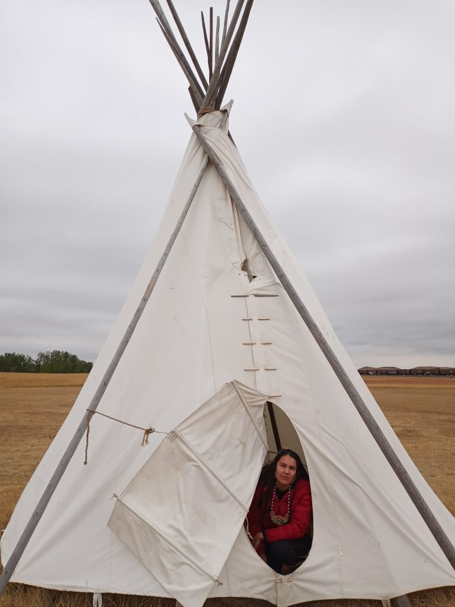
Reservations are often forgotten pockets of America, facing systemic economic isolation and a lack of critical infrastructure. By supporting Sacred Ones, you aren't just giving charity. You are investing in sovereign solutions that break generational cycles.
We are building a future where our youth can thrive right here at home.
Fort Peck sits where the Missouri bends through northeast Montana: Assiniboine and Sioux country, two million acres of prairie, river bottom and sky. Our grandparents were told their language, their ceremonies and their way of feeding themselves had no place in the modern world. Everything on this page answers that. A data center on tribal ground. A park where the stories are told in the open air. Buffalo on the grass again. These are not separate wishes; they are one plan to make home a place a young person chooses to stay.
Unemployment on reservations can be staggeringly high due to geographic isolation. Our AI data center skips the industrial age and leaps into the digital future, bringing high-paying tech jobs directly to our doorstep.
Generations of erasure have left deep scars. Reconnecting our youth with the land, the buffalo and their ancestors in our ancestral park provides essential mental health support and spiritual grounding.
True independence comes from self-sufficiency. Your support helps us build our own energy, food systems (bison) and educational facilities, reducing reliance on broken federal systems.
Our emblem carries four words around its rim: Our people. Our land. Our culture. Our future. They are the order we work in. People first, because a hungry child cannot learn to code. Land second, because a people without a place to gather is a people scattered. Culture third, because the songs and the language are the proof that we survived. Future last, because it is the only thing we are allowed to give away.
The Oceti Sakowin teach that every decision should be weighed against its effect seven generations ahead. Measured that way, a laptop for a student, a sewing machine for an elder, a season of hay for a bison herd stop being charity. They are seeds, and the harvest belongs to children who are not yet born.
Green-powered servers on sovereign ground, and a classroom where our youth learn to run them. High-wage work without leaving home.
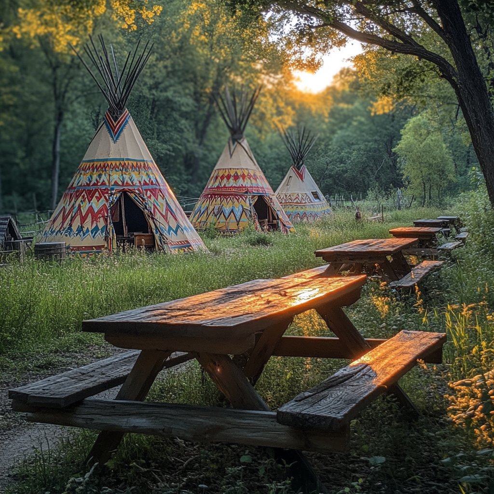
Woods, water and open sky. A place for storytelling, traditional games and quiet, built for healing rather than noise.
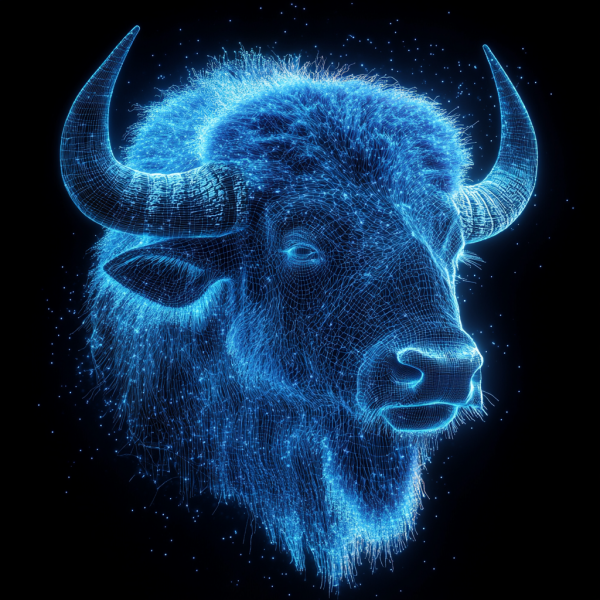
Tatanka back on the prairie. The herd restores the grassland, feeds families, and returns a relative we were never meant to lose.
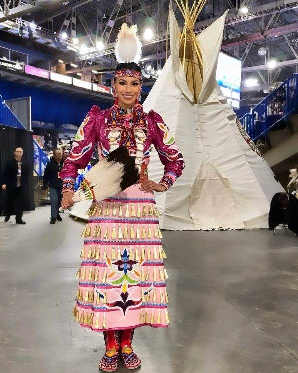
Jingle dress, drum and language, carried by the people who still practice them. Regalia, lessons and gatherings for the next dancers.
The story is told across Ojibwe and Dakota country: during the influenza years a father dreamed of a dress sewn with rolled tin cones, and of his sick daughter dancing in it until she was well. A century later the dress still rings in our arenas, hundreds of cones moving like rain on a tipi.
Sacred Ones helps families sew regalia, brings drum groups to school gyms, and pays travel for young dancers to reach the powwow circuit. When you see our children in the circle, you are seeing the oldest medicine we have.
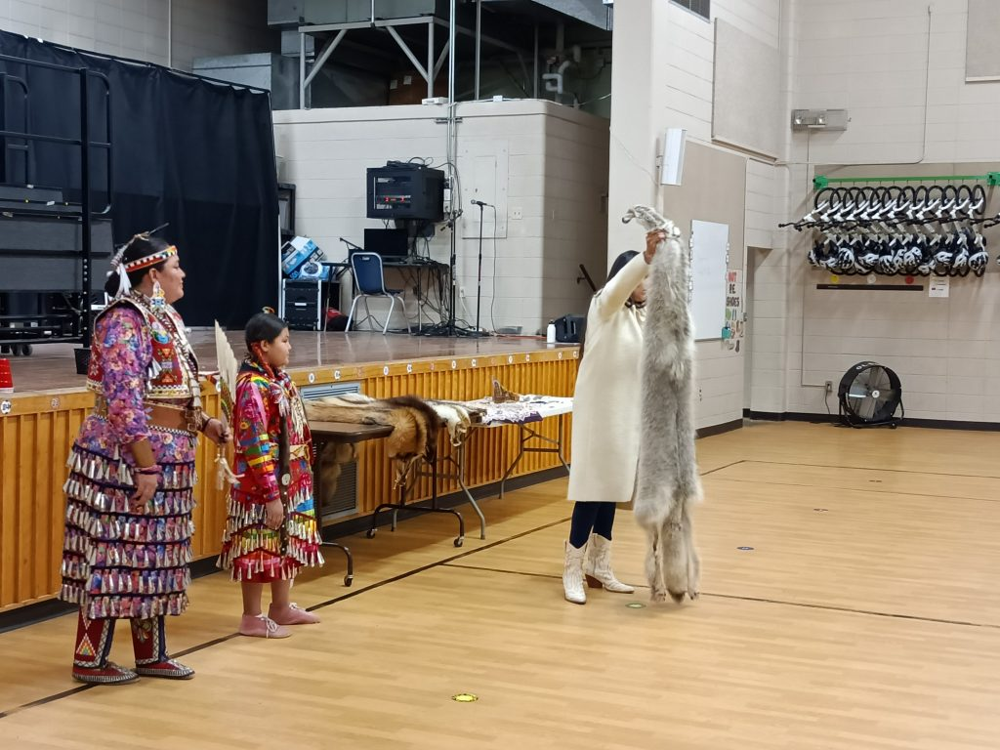
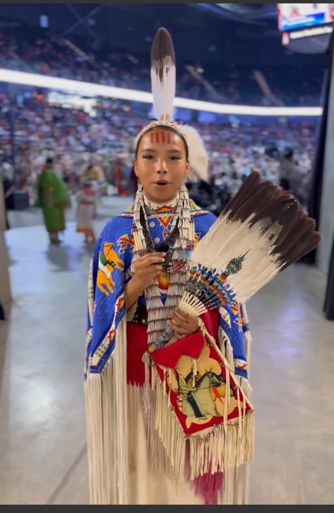
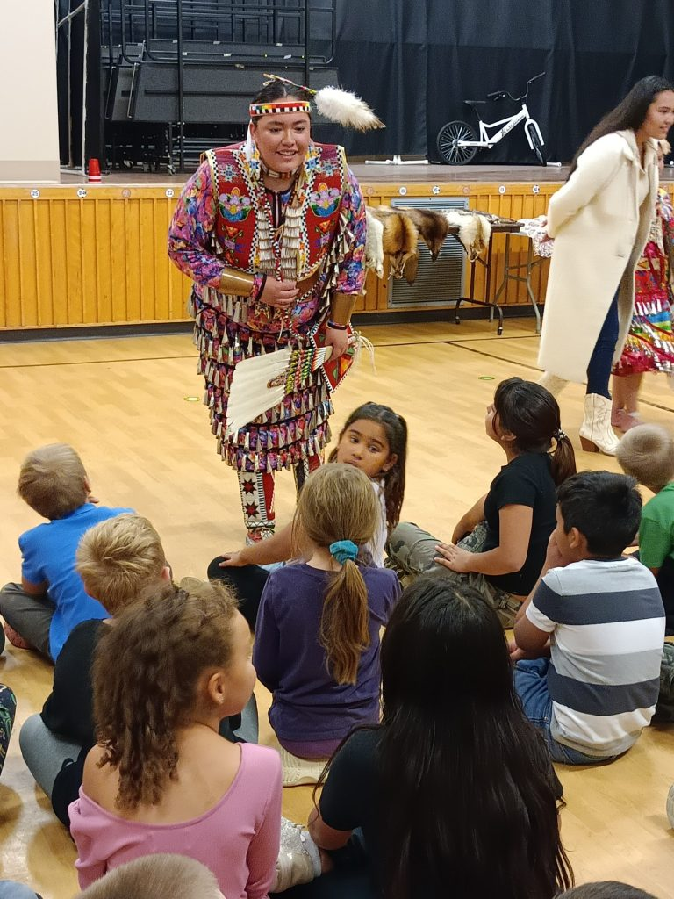
On a gray spring evening the whole community came out to the park: bounce houses, a table of giveaways, a row of brand-new bikes with the tags still on, and matching black Sacred Ones shirts for every child who wanted one. No speeches. Just food, play and the sound of kids finding out the bikes were theirs to keep. Tap any photo to see it larger.
Seven chapters, written for our own young people first: who we are, how the world was made, what was promised, who stood up, and what we invented. Read it as a book, or open any chapter.
“We must return to the Vision of the Dream to carry about the Living of Today.”
In a powerful address, Chief Bear Cross speaks to the heart of our community's resilience. He outlines the path forward: how the ancient wisdom of the Oceti Sakowin is not just history, but the medicine needed for the modern world. The vision he speaks of is practical. Feed the people, gather the people, teach the children, and the healing follows.
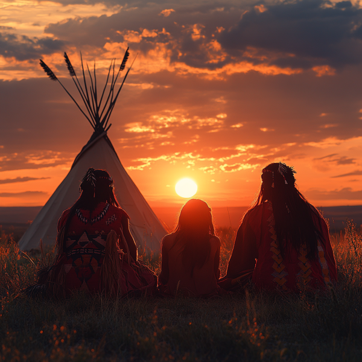
This masterpiece beautifully weaves our creation stories with the urgent message of environmental stewardship. A visual journey that honors the spirit of the Coyote and the wisdom of our ancestors. Coyote is the oldest teacher on the Plains: foolish, hungry, brave and funny, and never finished learning. Áron Gauder's animated feature lets him carry a creation story across the centuries to the edge of the world we live in now. We show it to our youth because it says what we say, in a language they already love.
Mother to some, guide for many, friend of the heart.
Yellow Butterfly Woman is the inspiration behind the dream. She has spent her life listening: to elders, to young people in trouble, to anyone who sat down at her table. Sacred Ones grew out of those conversations, and it keeps her way of working. Nothing is built that the people did not ask for. Please feel free to reach out to seek counsel or healing. We hope this is a new venture that will bear fruit in the days to come.
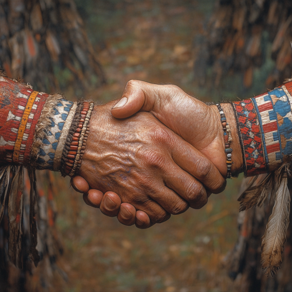
Write to sacredones22@gmail.com or find us on social media.
Sovereignty through technology, nature and spirit. Each project restores something our people were denied: land, food, belonging and ceremony.
We are skipping the industrial age and leaping straight into the digital future. By establishing an eco-friendly AI data center on tribal grounds, we use our sovereign status to create a tax-advantaged zone for high-tech infrastructure.
The first cohort will be local: young people who already fix their cousins' phones and run the sound at powwows. We will train them on the same hardware the industry uses, inside a building their own nation owns.
This is not just about servers. It is about people. Our training facility will teach our youth, who often face unemployment rates of over 50%, how to manage GPU-based systems (nVidia), code, and lead in the AI revolution. We are turning the "digital divide" into a competitive advantage.
Unemployment our youth often face. The training center exists to change that number.
A nature-based space for healing and recreation. No neon lights, just woods, storytelling and traditional games. Picture a creek-side camp of lodges, a hand-game arbor, horse trails, and an elder at the fire every evening. Families will book it the way others book a resort, and the money stays home.
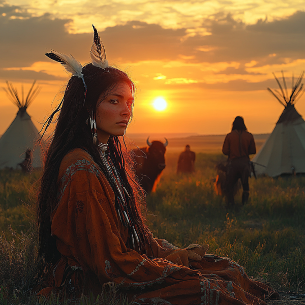
The return of the Tatanka restores our prairie ecosystem and gives us food sovereignty. A starter herd, fenced range, a hay reserve for the hard winters, and a plan to put buffalo meat in school lunches and elder meals.
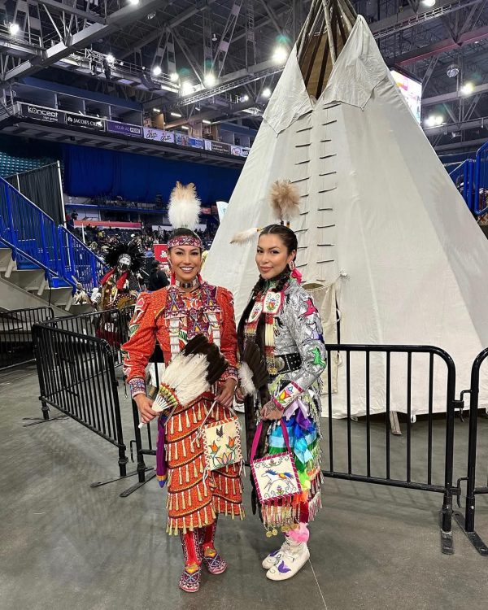
Jingle dress and drum, kept alive by our people. Regalia sewing circles, a youth drum group, language nights, and travel support so our dancers can enter the circle wherever it forms.
See living cultureHistory, cosmology and resistance in seven chapters.
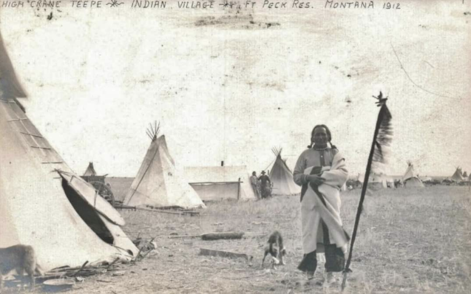
The imperative of accurate naming.
Names are the first thing a colonizer changes and the last thing a people get back. This chapter begins the archive where our grandparents would have begun it: by saying who we are, in our own words, and naming the seven fires that make one nation.
The primary objective of this archive is to dismantle colonial terminologies. The term "Sioux" is an exonym, a French abbreviation of the Ojibwe word Nadouessioux, meaning "little snakes" or "foreign speakers." To populate the archive with cultural integrity, we prioritize the endonym Oceti Sakowin (People of the Seven Council Fires).
This name references the ancient practice where the seven constituent bands would convene, each bringing coals to kindle a central, collective council fire. It symbolizes the unity of the diverse bands into a single sovereign entity.
Before there were people there was a story about how everything is related. Our cosmology is not a museum piece. It is the reason we call the buffalo a relative, the reason a stone can be prayed with, and the reason the land cannot be sold.
Often translated as "The Great Spirit," a more nuanced translation is "The Great Mystery." Wakan Tanka is not a monotheistic god but the supreme creative power and unifying force of the universe. In Lakota cosmology, all things (humans, animals, stones, trees) are imbued with Nagila (divine essence) and are therefore "relatives" (Mitakuye Oyasin).
In the beginning was the Void (Han). Wakan Tanka sent his spirit to manifest as Inyan (The Rock). From his own blood, Inyan created Maka (Earth) and Skan (Sky). These primordial entities created Wi (Sun) to bring light.
The Creator cleansed the world with a flood. Only Kangi (Crow) survived. The Creator sent diving animals to find mud. The Loon, Otter and Beaver failed. Finally, the humble Turtle (Keya) succeeded. The mud was spread on the Turtle's back to form Turtle Island (North America).
A gift came to the people when they were hungry and divided: a pipe, seven ways to pray, and a promise. Every ceremony we hold today, from a baby naming to a Sun Dance, traces back to the woman who brought it.
The pivotal moment in Sioux spiritual history. She appeared to two scouts: one lustful (who was destroyed), one righteous. She presented the Chanunpa (Sacred Pipe) to the people, teaching that as long as they held the pipe sacred, they would prosper. Upon leaving, she transformed into a white buffalo calf, promising to return.
Select a leader to read their story.
These four were not kings. They were chosen, again and again, by people who could have walked away. Each biography opens in its own window; read them in any order, and notice how often the word "people" appears before the word "I".
Three dates every child here learns. One we won outright, one we won on the field and lost in the papers, one we did not survive. Told together they explain why sovereignty is not an abstraction to us.
The only war the US ever lost to a Native nation. Red Cloud besieged the Bozeman Trail forts, forcing the US to abandon them and sign the 1868 Fort Laramie Treaty, guaranteeing the Black Hills to the Sioux.
Triggered by the Black Hills gold rush. A massive camp of Lakota and Cheyenne, led by Crazy Horse and Gall and spiritually guided by Sitting Bull, wiped out Custer's 7th Cavalry. It was a desperate defense of family, not a massacre.
The final tragedy. US troops, fearing the pacifist Ghost Dance movement, massacred hundreds of disarmed men, women and children. It marked the end of armed resistance.
Trickster, thunder, serpent and ghost. These stories were told in winter, when the snakes were asleep and could not overhear. They carry the ethics of the nation inside a good laugh or a good scare.
The Sioux have a rich tradition of stories surrounding spirits (Wanagi). One famous account tells of a warrior who wrestled a ghost throughout the night, a test of bravery against the supernatural. These stories emphasize that the spirit world is always close at hand.
Eight technologies of the Plains.
Long before "sustainable" was a word, our ancestors engineered a portable, zero-waste civilization on the open plains. This is the chapter we point our data-center students to first.
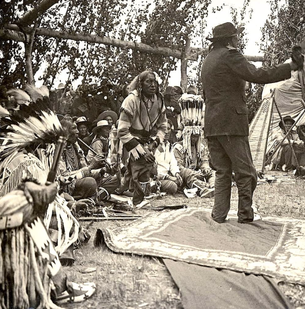